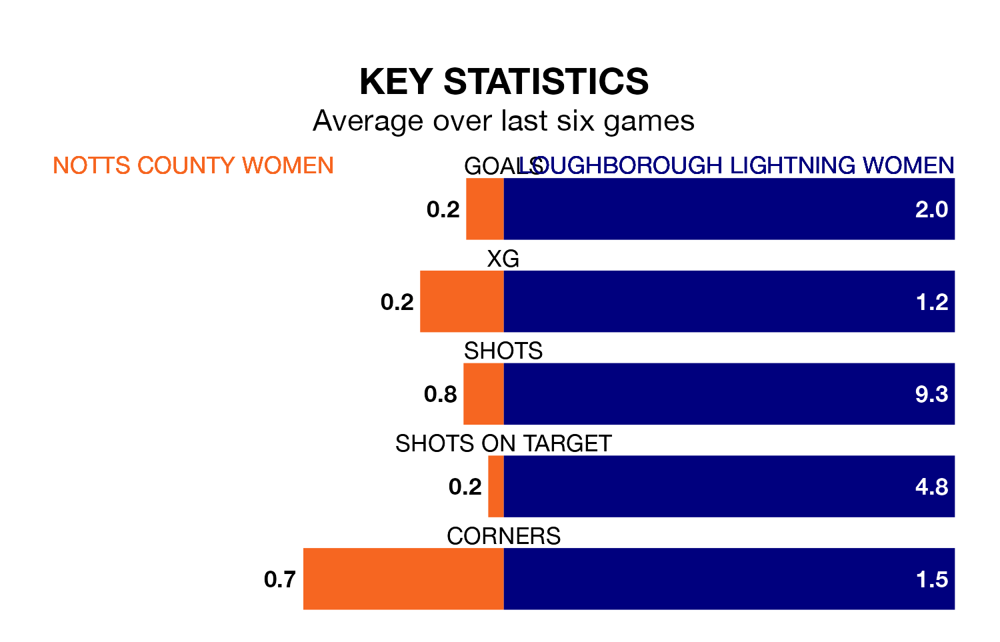

Mid-season relegation candidates Notts County Women face a challenge against high-flying Loughborough Lightning Women on Wednesday.
Notts County Women are 10th in the Women's National League Division One – Midlands table, and have picked up two wins and three draws in their 14 games to date.
Loughborough Lightning, meanwhile, are top of the standings with 35 points, having won 11 and drawn two.
With 13 goals in 14 games so far this season, Notts County are the league's third-lowest scorers with 0.9 goals per game. And they are conceding more than average, letting in 50 goals at a rate of 3.6 per game.
Loughborough Lightning, meanwhile, are above average scorers, with 2.6 goals per game, compared to a league average of 1.8. They have conceded 0.9 goals per game.
The home side are in terrible form in the Women's National League Division One Midlands, with no wins and two draws from their last six games.
With three wins and two draws over that period, the visitors' form is much better – they have taken 11 points from 18, compared to Notts County's two.
Over the last two years, Notts County and Loughborough Lightning have played each other twice. Loughborough Lightning won both of them.
Their last meeting was on October 29, when Loughborough Lightning won 2-0 away.
Notts County's last match was on February 4, a 6-0 loss against Northampton Town Women.
Loughborough Lightning beat Sporting Khalsa Women 3-1 last time out, on February 11.
Updated: 13:30 (UTC), 12/02/24